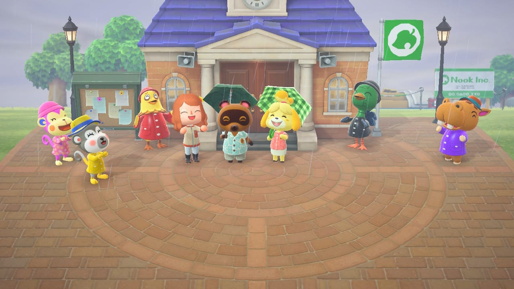
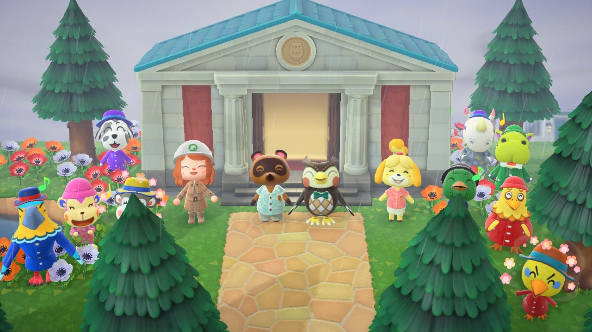
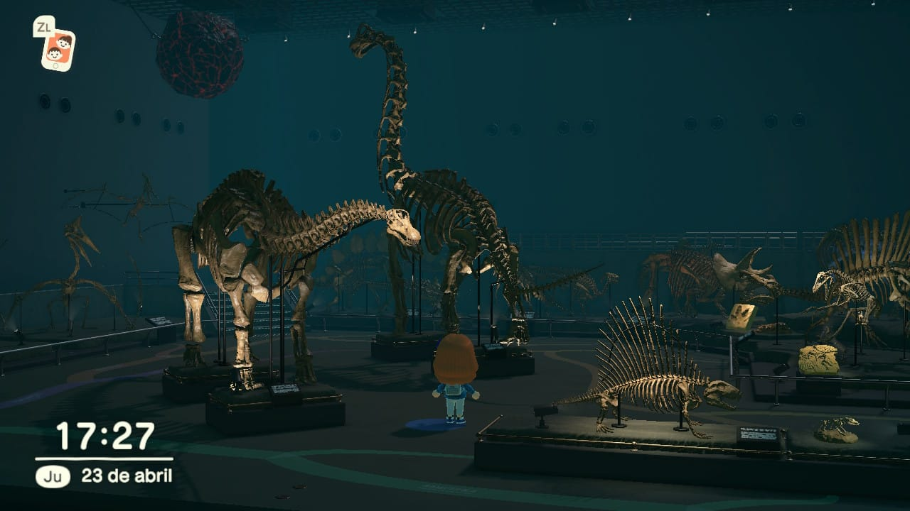

Oficina de Gestión Vecinal:
Al principio Tom Nook tendrá un pequeño edificio de color verde donde podrás empezar a aceptar y completar las primeras tareas, acceder al terminal y comprar algunas cosas de Tendo y Nendo. Más tarde podrás actualizar este edificio y convertirlo en un Centro de Gestión Vecinal cuando cumples una serie de requisitos como atraer tres aldeanos a tu isla y ayudarles con los muebles. Cuando hayan pasado un par de días se empezará a construir el centro de gestión vecinal.

Museo:
sadmfvdsakvfksdavgfhjdsbfgkjdfsnhgjfdshgbkfdjngkjfdsnkgdfsgfdsgdsfg

